ARGOMENTI:
- esempi di cpu
- esempi di bus
- interfacce il troughput può essere una unità di misura per capire quanto è veloce il processore e può misurare ogni componente che svolge la funzione nella pipeline
ESEMPI DI CPU:
- Pentium 4
- 3.2 Ghz
- 90nm
- può accedere a memorie a 64 bit ma i programmatori ci programmano sopra a 32 bit
- ha 3 livelli di cache
- 8kb di SRAM
- fino a 1mb
- da 2 MB
- Visto che ha due CPU potrebbe accadere un problema, se una modifica una parola nella sua cache locale, l’altra CPU avrà una versione vecchia della parola. perciò avviene il processo di monitoraggio detto snooping che permette alla CPU di tenere traccia delle modifiche che ha fatto, quindi quando un’altra CPU entra nel bus della memoria cercando qualcosa che ha già modificato l’altra CPU essa procede a inviarglielo aggiornato.
- pipeline più profonda
- due unità ALU che che operano al doppio della frequenza di clock
- il problema delle CPU è che ciucciano troppa energia, perciò intel ha trovato un modo per metterle in idle e farle consumare meno energia.
- questa tecnologia divide il funzionamento della cpu in 5 livelli da attivo a sonno profondo, più vai verso il livello di sonno profondo più perdi funzionalità come lo snooping e l’interrupt handling, quando la CPU va in sonno profondo rimangono attivi solo il registro e la cache e la CPU attende un interrupt hardware per risvegliarsi
Pin e segnali del Pentium4
La cpu ha diversi pin(478) e sono spartiti a seconda di diversi compiti:
- alcuni per i segnali di I/O, wait, interrupt…
- altri per l’alimentazione a diversi voltaggi
- altri ancora per la massa
- e la intel si lascia qualche pin libero per un uso futuro
I PIN DEL PENTIUM 4
ARBITRO DEL BUS
- BPRI# bus priority request
- BR0# bus request
- LOCK# la CPU chiede all’arbitro del bus per bloccarla e permetterne l’utilizzo solo della CPU
PIN DI RICHIESTA
Segnali scambiati con l’address bus e il bus di controllo
- A# trasferimento di bit di indirizzamento ha 36 bit di indirizzamento di cui 3 impostati a 0
- ADS# Si asserisce se l’indirizzo inserito sul bus è valido
- REQ# Specifica l’operazione di lettura o scrittura
PIN DI ERRORI
- MISC è un segnale di errore generico che serve per segnalare se c’è un errore
PIN DI RISPOSTA
Sono dei pin che usa il bus slave per comunicare con il bus master
- RS# contiene il codice di stato, ovvero un codice che ti dà lo stato corrente della CPU o del processo che sta eseguento
- TRDY# indica che lo slave è pronto ad accettare dati dal master
- BNR# asserisce uno stato di attesa quando il dispositivo indirizzato non può rispondere
PIN DI DATI
È utilizzato per il trasferimento di dati
- D# trasferisce 8 byte nel bus
- DRDY# si asserisce quando D sta per trasferire i dati, così che tutti gli altri componenti sono informati della cosa
- DBSY# viene usato per comunicare a tutti i dispositivi che il bus è occupato
IL PIN DI RESET’#’
- Viene usato per resettare la CPU in caso di problemi
differenza tra bus di controllo e arbitro del bus
l’arbitro del bus si limita a gestire il traffico il bus di controllo invece gestisce tutto ciò che riguarda le operazioni che svolge il bus come l’invio o il ricevimento di dati, gestione degli indirizzi ecc..
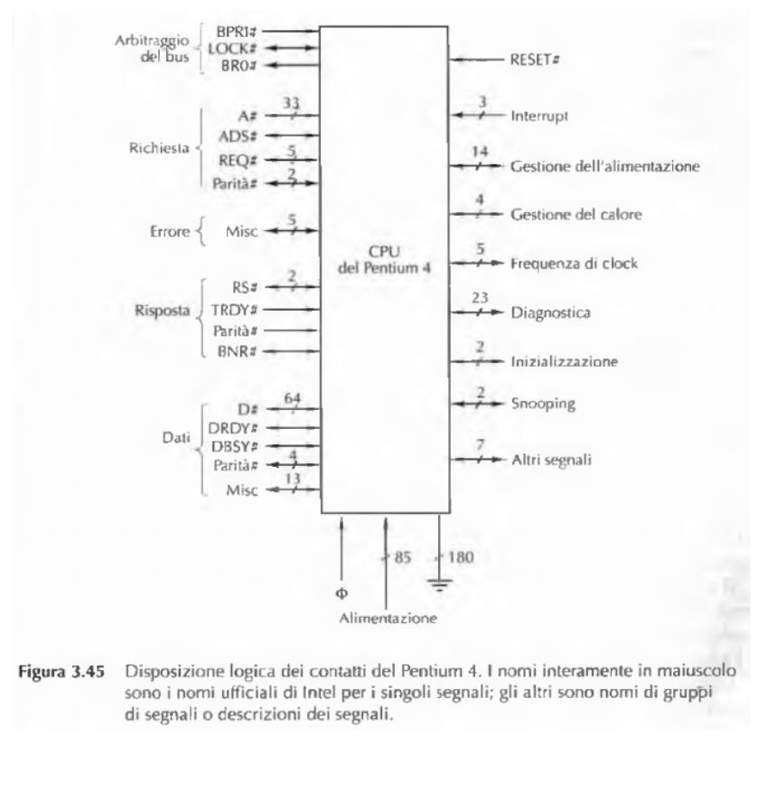
Pipeline nel Pentium 4
Le CPU sono più veloci delle memorie centrali basate su DRAM e per questo è essenziale ottimizzare la pipeline per ottenere il massimo troughput dalla memoria per evitare attese della CPU
troughput :
(quantità di istruzioni in un determinato tempo)
Per consentire l’uso della pipeline, le richieste di memoria del Pentium 4, chiamate transazioni, sono composte da sei stadi.
-
Fase di arbitraggio del bus;
-
Fase di richiesta;
-
Fase di segnalazione dell’errore;
-
Fase di investigazione (snoop);
-
Fase di risposta;
-
Fase dei dati.
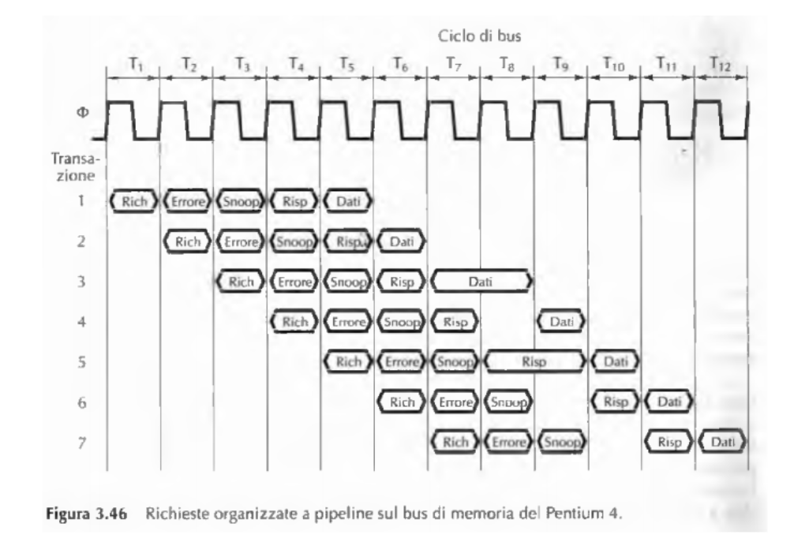
Intel Core I7
- 64 bit
- 4 core
- 45 nm
- 3,2 GHz
- Hyperthreaded ovvero più thread simultanei, quindi più spezzettamenti di una singola istruzione che lavorano in parallelo
- Ha 3 livelli di cache e lo snooping 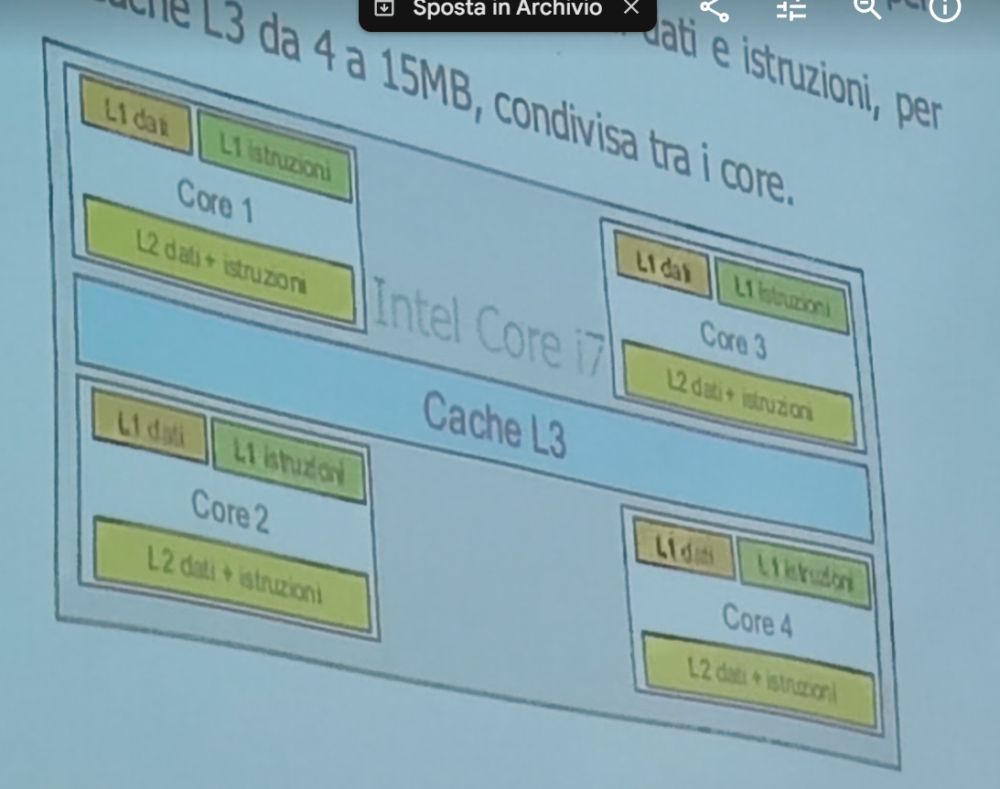
UltraSPARC 3
- linea di processori RISC usata per server e workstation
- 130 nm 1,2 GHz
- due CPU CISC e RISC non si possono confrontare tra loro
- La CPU poteva eseguire 4 istruzioni per ciclo di clock e aveva:
- 6 pipeline interne:
- 2 a 14- stadi per operazioni su numeri interi
- 2 per operazioni a virgola mobile
- 1 per operazioni di LOAD e STORE
- 1 salti e branch del programma ha 2 cache, quando fa una ricerca di una parola e non la trova nella cache di primo livello(miss) cerca la parola nella cache esterna di secondo livello che è più lenta
- 6 pipeline interne:
Micro controllore 8051
importante per gli esercizi sugli indirizzimenti e l’I/O a pagina 73 È uno dei microcontrollori più diffusi, il microcontrollore è un apparato per svolgere compiti specifici programmabili e più economici di una normale CPU
- 40 pin con 16-bit di address può indirizzare fino a 64KB di meoria, 8-bit per il bus dati
- ha 32 linee di I/O divise in 4 gruppi di 8 bit ciascuno
- i primi 7 a sinistra sono usati per interfacciarsi a memorie esterne
- la A viene usata per l’ indirizzamento alla memoria esterna
- la D è un pin dati a 8-bit per il trasporto dati
- si asserisce per indicare che deve fare una lettura
- si asserisce per indicare che deve fare una scrittura con la memoria esterna
- ALE indica la presenza di un indirizzo valido sul bus
- (Program Store Enable):si attiva quando viene usata una memoria esterna
- (External Access)può essere collegato:
- high usa sia la memoria interna che quella esterna
- low: usare solo quella esterna
- due cicli di clock esterni
- due priorità di interrupt diverse
- linee di I/O:
- TXD usato per l’uscita seriale(uscita sequenziale)
- RXD ricevere il segnale in modo sequenziale
- ci sono anche 4 porte seriali sia di I/O bidirezionali ciascuna con 8- bit paralleli
- RST serve per resettare il chip 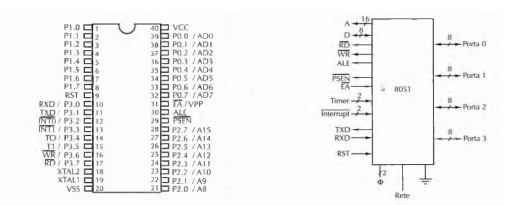
i tipi di Bus
ci sono diversi tipi di bus uno è quello AGP fu introdotto negli anni 90 e era dedicato alle schede grafiche 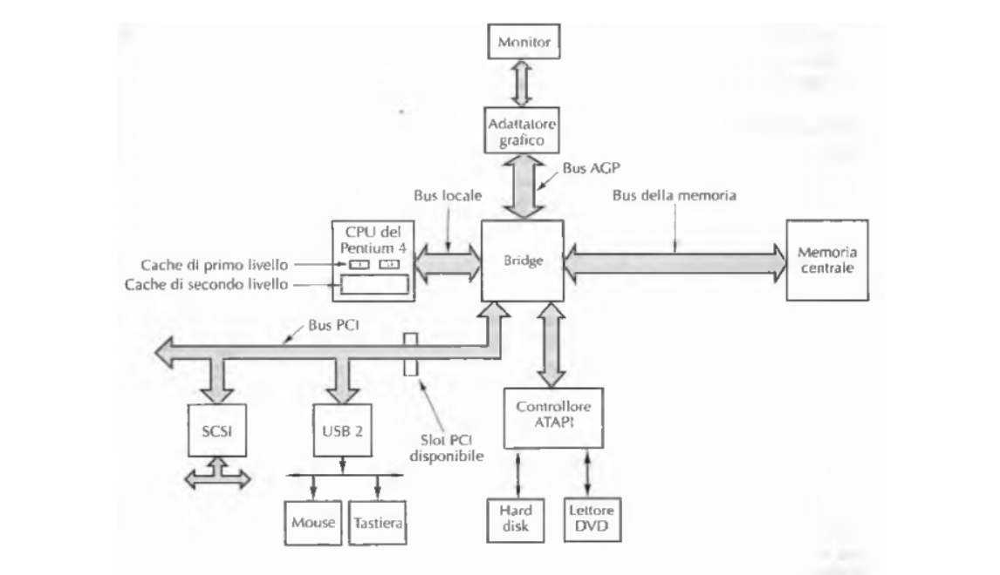
Bus PCI
- è sincrono e ha un master che invia i dati ad uno slave e viceversa
- rispetto EISA aveva una larghezza di banda maggiore così trasferiva più dati
- Inoltre le linee di indirizzi e dati sono multiplexate per ridurre i pin, in modo da rendere necessari solo 64 pin per i segnali di indirizzo e di dati.
- cosa fa il bus PCI?
- svolge un’operazione di lettura immettendo l’indirizzo sul bus(lo fa il master)
- rimuove l’indirizzo che ha depositato e il bus si inverte per far sì che l’informazione che cercava il master arrivi a lui
- lo slave(componente) invia i dati che ha richiesto il master con gli stessi pin Nelle operazioni di scrittura il bus non deve essere invertito perché il master invia e basta e lo slave se lo salva 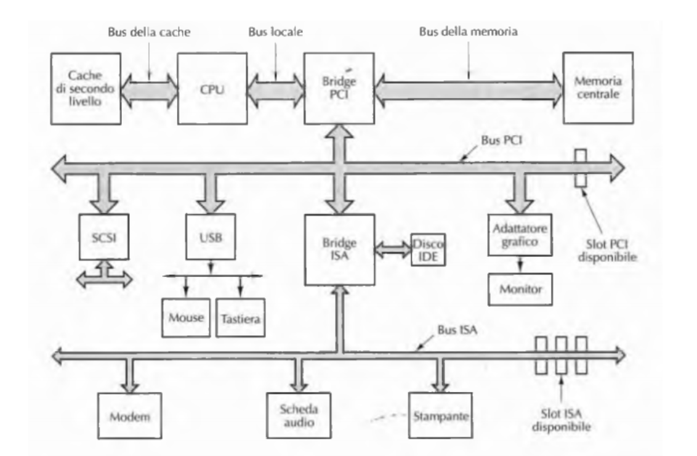
Bus PCIE(express)
- si chiama PCI ma in realtà non è nemmeno un bus e nemmeno ci azzecca con il PCI
- il PCIE ha un commutatore(gestore) che ha il compito di fare da intermediario tra le componenti e il chip bridge, le componenti sono collegate con il commutatore attraverso un sistema punto-punto e il commutatore invia le informazioni al chip bridge che le scambia con la memoria e la CPU
- Il modello concettuale del bus PCI è quello di un master che lancia allo slave un comando per leggere una parola oppure un blocco di parole. Il modello di PCI Express è invece quello di un dispositivo che spedisce un pacchetto di dati a un altro dispositivo.
- con il bus PCIE puoi inserire le componenti anche sul momento 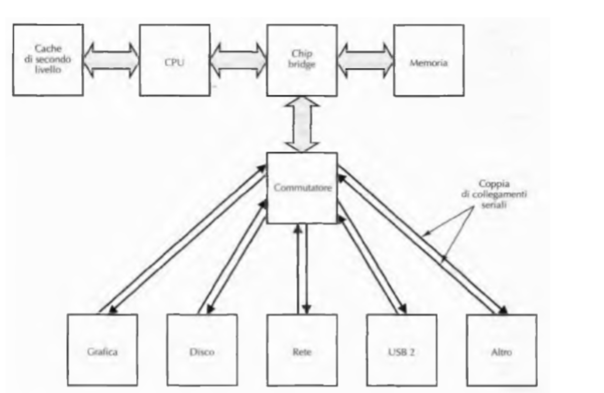
IL PACCHETTO DEL PCIE
funziona con una serie di protocolli a strati
- La stratificazione dei protocolli consente una progettazione modulare e flessibile
I LIVELLI dei protocolli del PCIE:
- fisico: lo spostamento(zozzo) dei bit da un mittente a un destinatario lungo la connessione punto a punto
- trasmissione: si assicura che la connessione tra i due dispositivi avvenga con successo e che non ci sia perdita di pacchetti
- transazione: gestisce le azioni sul bus, quindi il trasferimento la formattazzione del pacchetto e il traffico
- software: interfaccia il sistema PCI Express al sistema operativo
nella figura b c’è come vengono suddivise le informazioni di un pacchetto 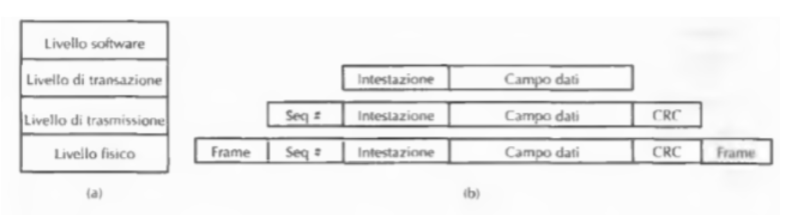
cosa è un protoccolo
una serie di istruzioni e regole che servono per consentire la comunicazione tra due parti(tipo https con server e pc)
Universal Serial Bus
nasce da un problema PCI E PCIE sono troppo costose per connettere periferiche a bassa velocità
- è composto da un HUB principale o root hub dove ogni periferica è collegata con esso, l’HUB è collegato direttamente sul bus il cavo è composto da 4 fili 2 per i dati, 1 di alimentazione è 1 per la massa quando un nuovo dispositivo viene collegato che succede?
- l’hub root rileva questo evento genera un interrupt per il sistema operativo che:
- riceve l’interrupt e interroga il dispositivo per sapere di che tipo è e la necessità di banda
- se la larghezza di banda è sufficiente il sistema operativo gli assegna un numero unico e carica le informazioni del dispositivo
- ora tutto funziona e non serve fare altro l’hub si collega ai dispositivi di I/O con un collegamento punto-punto, i dispositivi non possono connettersi tra loro ma solo con l’hub per mantenere sincronismo spedisce ogni tot un nuovo frame(pacchetti)
Tipi di Frame
USB supporta 4 tipi di frame, ovvero più pacchetti dati che vengono scambiati ogni tot con l’hub
- di controllo: servono per configurare i dispositivi, per assegnargli dei comandi e per fare dei check di stato
- isocroni: per dispositivi in tempo reale che devono inviare pacchetti ogni tot(mirofoni)
- bulk: utilizzati per trasferire file di grandi dimensioni
- interrupt: la USB non accetta interrupt quindi per far funzionare una tastiera viene interrogata ogni 50 per raccogliere i dati relativi alla pressione dei tasti
Tipi di pacchetti
Un frame contiene pacchetti ne esistono 4:
- token: servono per il controllo del sistema dall’hub al device
- dati: servono per sincronizzare e identificare i pacchetti dati
- handshake: serve per stabilire la connessione e c’è una attesa
- special: per usi specifici specialissimi
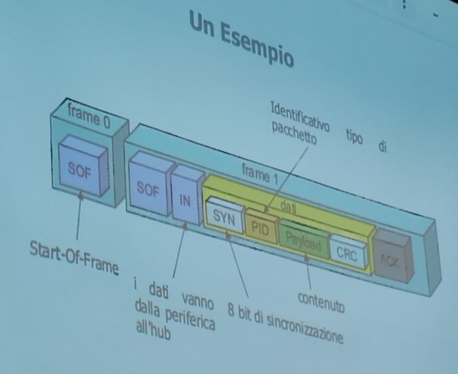
Interfacce di I/O
queste interfacce sono delle schede che permettono di collegarsi ad elementi esterni esistono dei chip standard:
- UART: legge un byte dal bus dati e lo trasmette un bit alla volta in output oppure al contrario
- USART: è UART gestisce vari protocolli allo stesso tempo, in modo sincrono
- PIO: chip per il collegamento di un dispositivo I/O che lavora in parallelo
Come è fatto il PIO?(esercizi a pag.73)
chip programmabile 8255A ha due porte di I/O(quelle a destra) e possono inviare 8 bit per porta
- : collega più PIO in parallelo
- A0-A1: comunica con il bus indirizzi per scegliere l’informazione
- : si asserisce quando la CPU ha emesso i dati sul bus e sono validi per la scrittura
- : si asserisce quando la CPU effettua una lettura dal bus dati
- D: viene usato per scambiare i dati con il bus dati
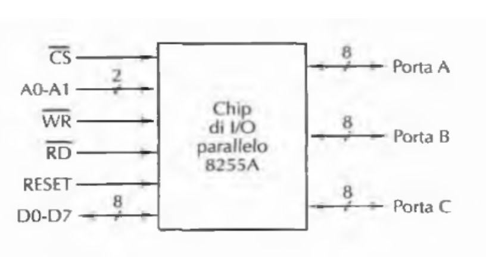
I dispositivi di I/O si dividono in due tipi di indirizzamento:
- port mapped I/O:
- è un reale dispositivo di I/O
- questo dispositivo viene contraddistinto dal control bus come un dispositivo separato dalle memorie che già gestisce
- perciò hanno un indirizzo di memoria a sé e la CPU decide se rivolgersi ad esso oppure ad una delle sue memorie
- memory-mapped I/O:
- è trattato come se avesse un indirizzo di memoria uguale alla memoria che c’è già nel sistema(ordinaria)
- La CPU scrive dentro questo dispositivo come se fosse una componente di memoria(es. ram, Hdd o un registro)
- le informazoni che verranno inviate a quel determinato indirizzo in realtà andranno sul dispositivo di I/O
Chat GPT esempio:
Ecco alcuni esempi pratici dei due metodi di indirizzamento I/O:
- Port-mapped I/O:
Esempio pratico: Supponiamo che un computer debba inviare un byte a una stampante.
Nella port-mapped I/O, la CPU utilizza una specifica istruzione OUT che trasmette il byte a un
indirizzo I/O che è dedicato alla stampante. Questo indirizzo è diverso da qualsiasi indirizzo di
memoria e l’istruzione OUT è specifica per le operazioni di I/O.
Applicazioni tipiche: I sistemi che usano port-mapped I/O spesso riservano questo metodo
per dispositivi che richiedono una comunicazione semplice e diretta con la CPU, come il
controllo di piccole luci a LED o motori in un sistema embedded.
- Memory-mapped I/O:
- Esempio pratico: Consideriamo un sistema grafico in cui la GPU deve aggiornare
- continuamente i pixel sullo schermo. Nella memory-mapped I/O, ci sarebbe un blocco di
- memoria dedicato che rappresenta l’intero schermo, detto framebuffer. La GPU legge e scrive
- direttamente a questo blocco di memoria per cambiare l’immagine visualizzata sullo
- schermo. La CPU tratta queste operazioni come se stesse leggendo e scrivendo su normale
- memoria, anche se in realtà sta interagendo con la GPU.
- Applicazioni tipiche: Questo metodo è spesso usato per dispositivi che necessitano di
- un’intensa e rapida trasmissione dati, come schede video, schede di rete, o per implementare
- interfacce utente complesse in sistemi operativi.
Architettura di esempio del memory-mapped I/O
 lo spazio di indirizzamento sono 16 bit ovvero 64 KB
che verranno rispettivamente utilizzati dalla EPROM(programma) e la RAM(dati) con 2 KB per uno e la PIO con 4B
lo spazio di indirizzamento sono 16 bit ovvero 64 KB
che verranno rispettivamente utilizzati dalla EPROM(programma) e la RAM(dati) con 2 KB per uno e la PIO con 4B
- La EPROM riconosce che la CPU si sta rivolgendo a lei(si accende) quando viene inviato un segnale compreso tra 0000 e 07FF ovvero quando sono bassi A15 fino a A11
- la RAM si accende quando A15 è alto e A14 fino ad A11 sono bassi(8000 e 87FF)
- La PIO risponde quando A15 fino a A2 sono alti(accesi) quindi FFFC e FFFF 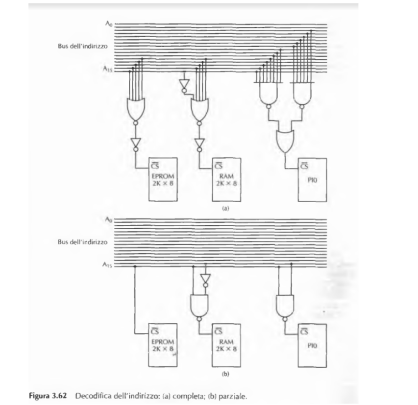